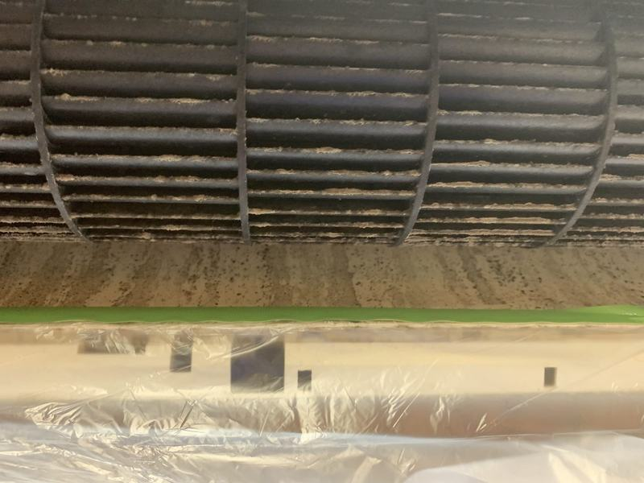
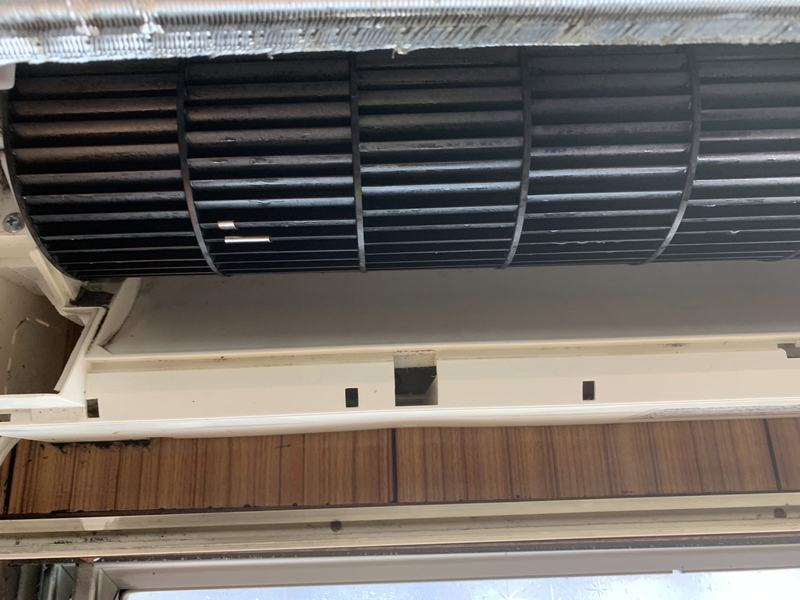
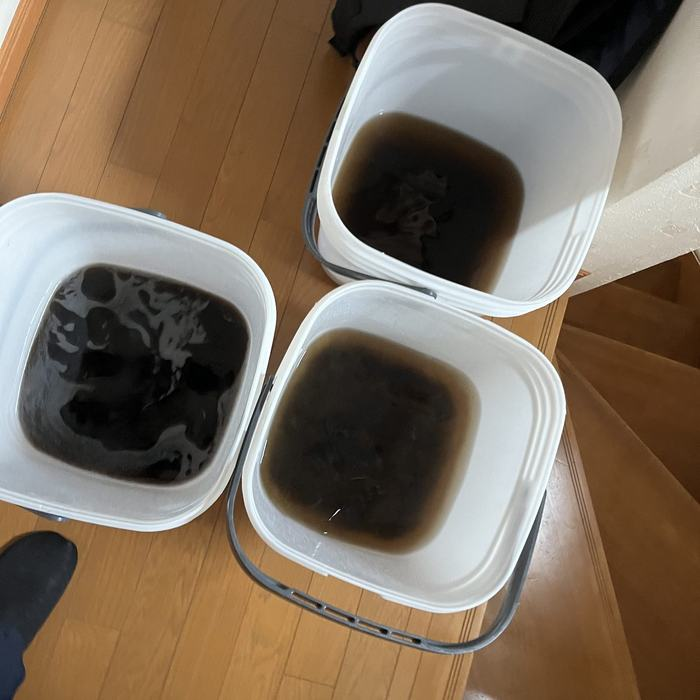

フィルターを掃除してもカビ臭い。原因は、内部のカビです。
熱交換器の奥まで、分解して洗います。
11月の作業なら 9,702円（1台のご依頼は10%引き）
空いている日を見て予約する入力は1分・予約時のお支払いはありません お電話でも 080-8043-8259（8:00〜20:00）WHO COMES
エアコン掃除を頼むのが初めてだったので不安が大きかったですが、思ってた以上に丁寧な感じで、掃除する前に段階を踏んでから取り掛かっていたのでよかった。担当してくれた方も気さくな人だったので不安はなくなりました。また利用したいです。
62歳 女性／エアコンクリーニング（公式サイト「お客様の声」より・原文のまま）
BEFORE / AFTER


エアコンの送風ファン｜実際の施工前と施工後（同じ箇所）

洗浄で出た汚水作業後は、この水をお客様にもご覧いただいています。
デザイン案A「顔の見える職人」のモック（未配信）